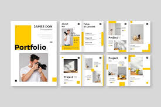
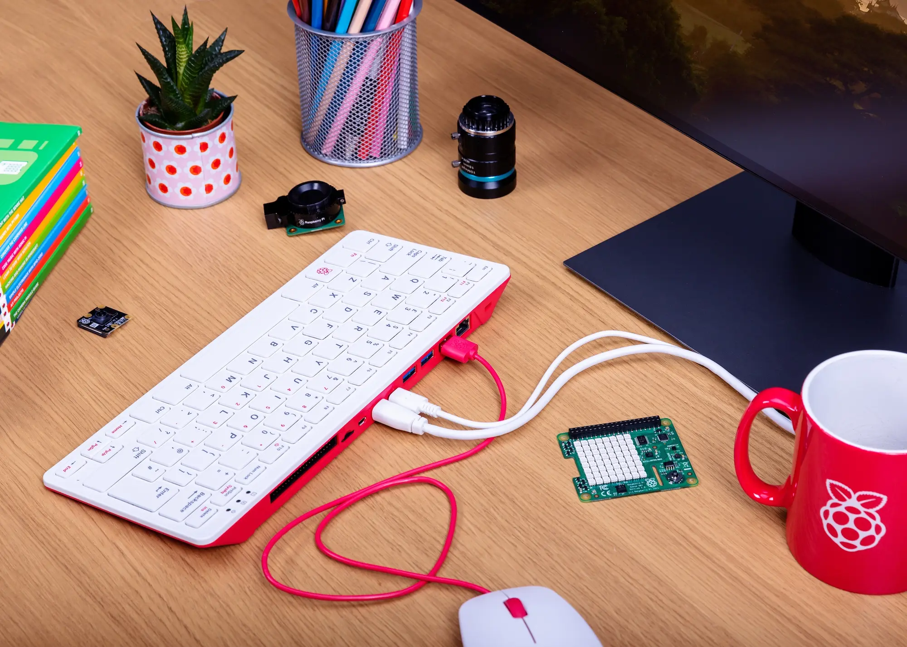

Projet en bases de données sur les jeux vidéos sur le site IGDB

Dates : Du 25 mars au 18 juin 2025
Fonctionnalités :Mise en pratique en PL/SQL avec les vues, fonctions, procédures, curseurs, déclencheursMCD et SR élargiCarnet Jupyterlab pour traiter les données et montrer les statistiques
Compétences : PL/SQL, Oracle SQL, Python, Marimo
Application Java sur la cité internationale universitaire de Paris

Dates : Du 3 février au 16 juin 2025
Fonctionnalités :Recueil de besoinsMaquettes interactivesProgrammation orienté objetCréation et suppression des maisonsGestion des menus des restos UGestion des maisonsInscription etudiant
Compétences : Java Swing, Java, Figma, Office 365, GitLab, maquettage, leadership, gestion de projet, méthode agile, travail d'équipe
Gaming FC - Top Eleven Career
Dates : Du 19 mai 2025(En cours)
Compétences : HTML, CSS, JavaScript, Visual Studio Code, Figma, React
Fonctionnalités :Mis en avant de mon club de football Top ElevenBases de données des joueurs et des résultatsMise en valeur de mon palmarès
Portfolio personnel
Dates : Du 24 septembre 2024 au 19 mai 2025
Compétences : HTML, CSS, JavaScript, Visual Studio Code, Figma
Fonctionnalités :Mise en avant de mes compétencesPrésentation de mes projets académiques et personnelsAmbitions pour mes futurs projets
Lien : Lien de mon portfolio
Installation d'un poste avec Raspberry Pi 400 - Acte II
Dates : Du 16 décembre 2024 au 24 janvier 2025
Fonctionnalités :Installation du Raspberry Pi 400 au PCConfiguration du Raspberry Pi 400Création de bases de données sur le terminal MySQL ShellRapport en anglais
Compétences : MySQL, Linux, Word, Bases de données, Anglais
Jeu vidéo pixel en 2D
Dates : Du 27 novembre 2024 au 23 janvier 2025
Compétences : C++, lecture de fichiers, écriture de fichiers, programmation orienté objet
Fonctionnalités : Dictionnaire des objetsPartie de jeuRésultat de la partie jouée
Création de bases de données sur le magasin de sport DECATHLON - Acte II
Dates : Du 24 septembre 2024 au 21 janvier 2025
Fonctionnalités :Interview chez DECATHLON Paris Rive Gauche pour une récolte d'un maximum d'informations utiles pour la base de donnéesModélisation abstraite de la base données(MCD et SR)Mise en pratique en SQL(Requêtes)Tests pour assurer le bon déroulement du script SQL
Compétences : Oracle SQL, Word, SQLite, Looping, bases de données
Jeu sur les artefacts
Dates : Du 4 au 14 novembre 2024
Compétences : C++ débutant, fonctions
Projet en bases de données sur les Jeux Olympiques

Dates : Du 15 mai au 23 juin 2024
Fonctionnalités :Mise en pratique en PL/SQL avec les vues, fonctions, procédures, curseurs, déclencheursMCD et SR élargiCarnet Jupyterlab pour traiter les données et montrer les statistiques
Compétences : PL/SQL, Oracle SQL, Python, Jupyterlab
Projet Réseaux sur le château de Monte-Cristo
Dates : Du 27 mai au 21 juin 2024
Fonctionnalités :Configuration des machines et des routagesTest de connexion avec pingRésolution de problème en raison des pannes
Compétences : Linux, Travail d'équipe, Marionnet, autonomie, DHCP, Apache2web, DNS, SSH, configuration des machines et routages
Application Java sur les Jeux Olympiques
Dates : Du 5 février au 17 juin 2024
Fonctionnalités :Recueil de besoinsMaquettes interactivesProgrammation orienté objetCréation des équipes et des participantsGestion des sessionsRésultats des épreuves en direct et en temps réel
Compétences : UML, Java Swing, Java, Penpot, maquettage, PERT, GANTT, gestion de projet, PBS, WBS, travail d'équipe
Recueil de besoins sur la maison d'éditions CARIBOU
Dates : Du 28 novembre 2023 au 26 janvier 2024
Fonctionnalités :Analyse de besoins pour récolter un maximum d'idéesInterview avec un client final et un libraireMise en pratique des idées récoltées avec les diagrammes(WPS, PBS, diagrammes des classes..)
Compétences : Travail d'équipe, gestion de projet, autonomie, chef de projet
Installation d'un poste avec Raspberry Pi 400 - Acte I
Dates : Du 18 décembre 2023 au 26 janvier 2024
Fonctionnalités :Installation du Raspberry Pi 400 au PCConfiguration du Raspberry Pi 400Création de bases de données sur le terminal MySQL ShellRapport en anglais
Compétences : MySQL, Linux, Word, Bases de données, Anglais
Création et traitement d'images
Dates : Du 22 novembre 2023 au 25 janvier 2024
Compétences : C++, lecture de fichiers, écriture de fichiers, traitement d'images
Site web : Formation Tactique Militaire
Dates : Du 10 octobre 2023 au 24 janvier 2024
Compétences : HTML, CSS, Responsive design, Notepad++, Flexbox, Grid, IFrame
Fonctionnalités :Menu de navigation et contactsPage d'accueil contenant une vidéo fun, un texte argumentéePrésentation des formationsFormulaire pour l'inscription dans des formations souhaitées
Création de bases de données sur les cinémas UGC - Acte I
Dates : Du 3 octobre 2023 au 23 janvier 2024
Fonctionnalités :Interview chez JN Primeur dans un premier temps pour une récolte d'un maximum d'informations utiles pour la base de donnéesModélisation abstraite de la base données(MCD et SR)Récolte d'informations sur le site UGC suite à une mauvaise proposition sur JN Primeur en raison d'une base de données trop légèreMise en pratique en SQL(Requêtes)Tests pour assurer le bon déroulement du script SQL
Compétences : Oracle SQL, Word, SQLite, Looping, bases de données
Conception de la gourde isotherme

Dates : Du 5 septembre 2022 au 17 juin 2023
Compétences : SOLIDWORKS, Word, CES Edupack
Fonctionnalités :Bouchon sport pour faciliter l'ouverture et la boissonRécipient avec double paroi pour performer l'isothermieSocle constituant la partie électrique(prise + pile)
Choix des matériaux
Dates : Du 8 novembre 2021 au 20 juin 2022
Compétences : SOLIDWORKS, Word, Arduino, Proteus, CES Edupack
Fonctionnalités :Choisir le meilleur matériau pour tel produit en fonction du prix, du design, et des critères spécifiquesTester les produits afin de prendre une bonne décision